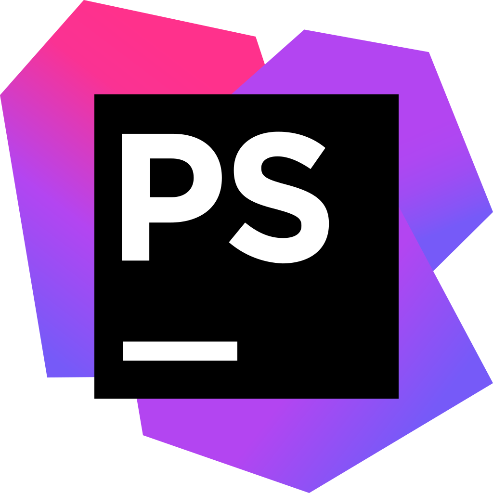
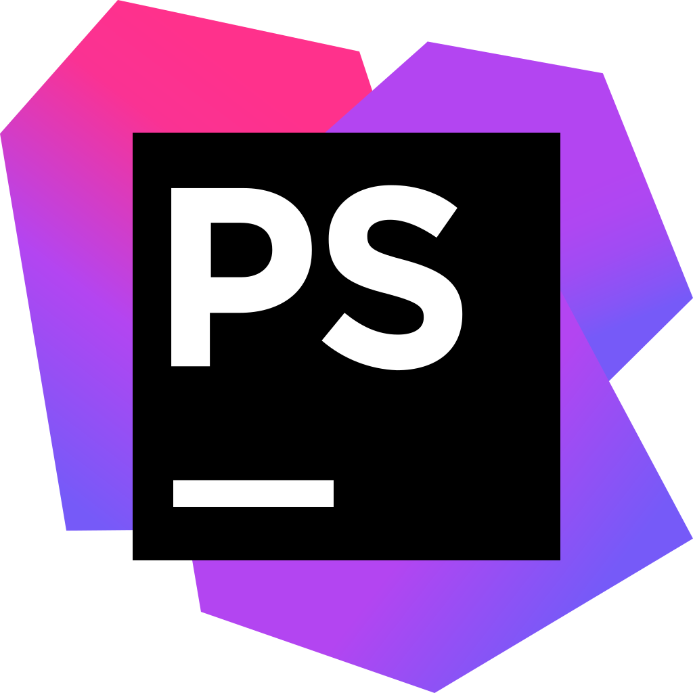
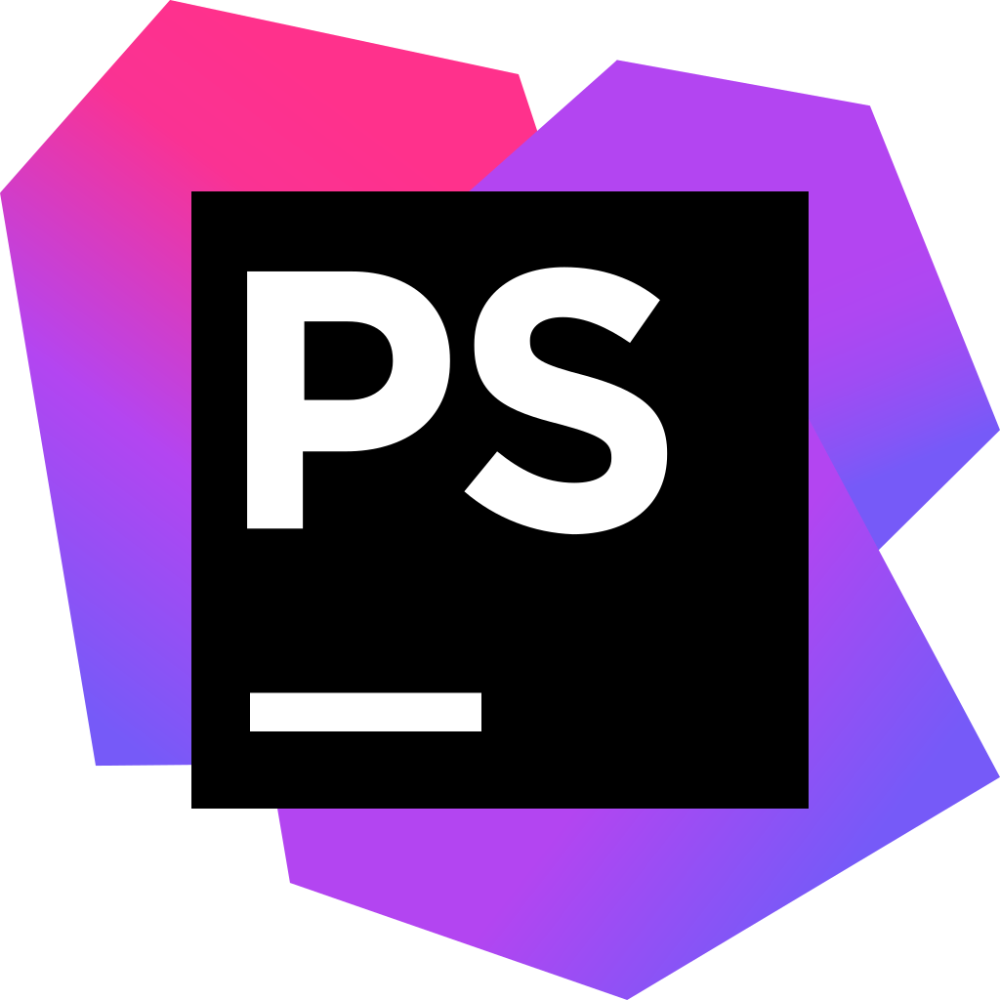

Инструменты

 



Хочешь научится делать сайты? Не знаешь, как? Здесь ты найдёшь все чтобы начать...Хочешь научится делать сайты? Не знаешь, как? Здесь ты найдёшь все чтобы начать...
О себе и как я стаю программистом
Меня зовут Данил мне 14 лет я только начинаю заниматься программированием. Хочу научится всё делать правильно. Я долго думал над темой своего первого проекта и решил написать сайт о том что мне интересно - Веб-программирование. Учится программировать я начинал сам: читал форумы, пробовал, делал иногда у меня получалось иногда нет. Я не знал, что мне делать ведь разобраться самому довольно сложно.
Я начал ходить на кружок "Веб-дизайн". Когда у меня появился преподаватель который знает, как правильно программировать, что делать когда не получается или забыл то можно научится много новому и постепенно себя развивать и стать великим программистом :). Надеюсь сайт будет Вам полезным.
